Люди Дома
Музей и театр
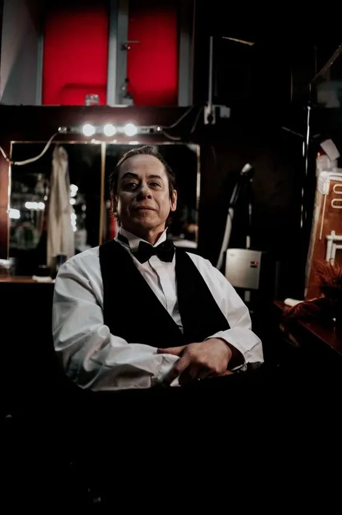
Сергей Алдонин
Поставил в театре «Мастера и Маргариту», «Собачье сердце» и «Ромео и Джульетту».
Актёры
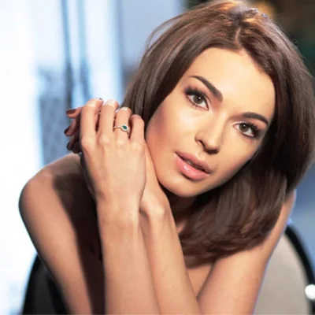
Агния Дитковските
Одна из исполнительниц роли королевы Анны в «Стакане воды».
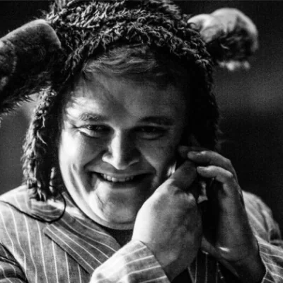
Андрей Курносов
В «Мастере и Маргарите» играет Берлиоза, Бенгальского и Сокова.
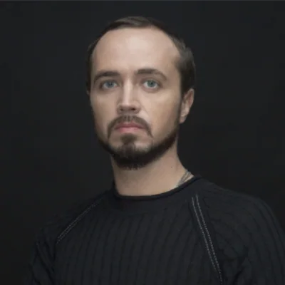
Евгений Самарин
В театральном «Мастере и Маргарите» исполняет роль Мастера.
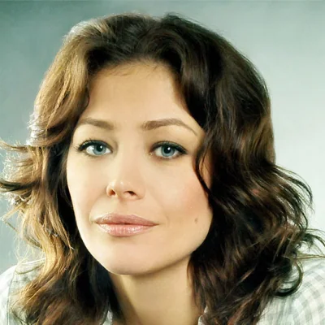
Екатерина Волкова
Играет Маргариту в одном из составов постановки Сергея Алдонина.
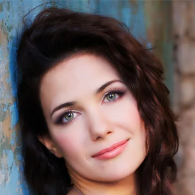
Екатерина Климова
Играет королеву Анну в одном из составов комедии Скриба «Стакан воды».
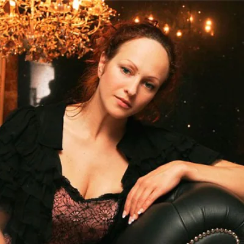
Елена Морозова
В постановке «Мастер и Маргарита» заявлена в числе исполнительниц роли Геллы.
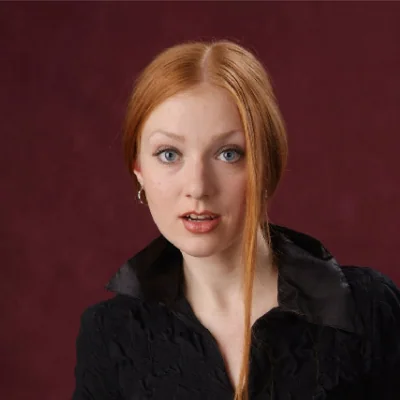
Елена Соломина
В постановке Сергея Алдонина «Ромео и Джульетта» играет леди Капулетти.
Наши гиды
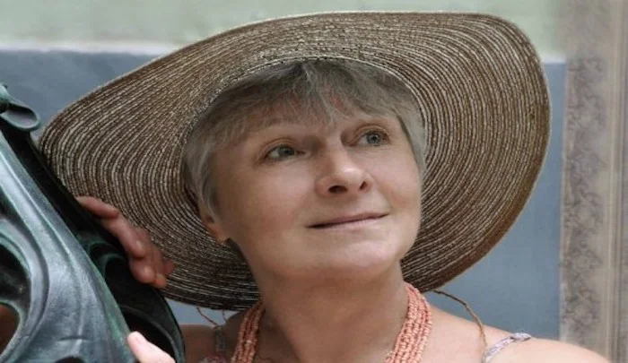
Ирина Яковлевна Горпенко
Хранит архив булгаковеда Бориса Мягкова, ведёт лекторий и готовит мемориальные выставки.
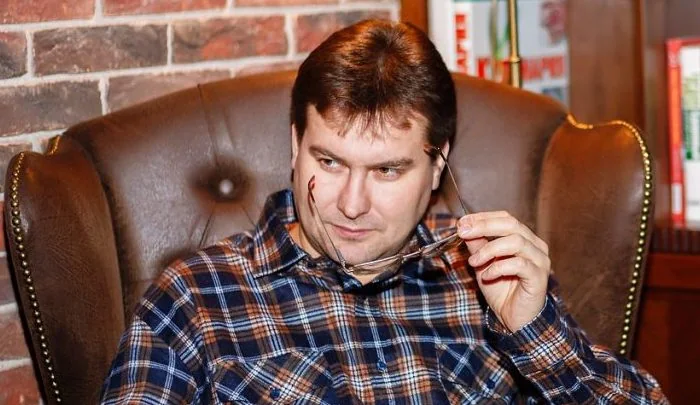
Алексей Беклемышев
Водит экскурсии в музее с 2004 года. В числе его маршрутов — трамвай, дневные прогулки и ночная Москва.
Наталья Гусак
С 2019 года проводит обзорные экскурсии в доме, дневные прогулки и поездки на трамвае.
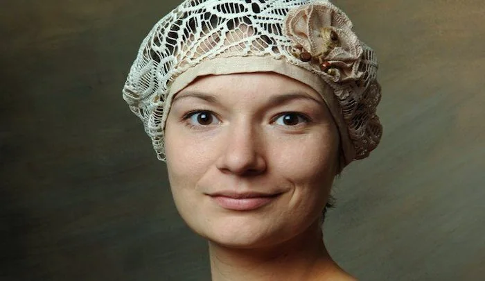
Юлия Груздева
Ведёт музейные, пешеходные и автобусные программы. Среди маршрутов — Москва архитектора Шехтеля.
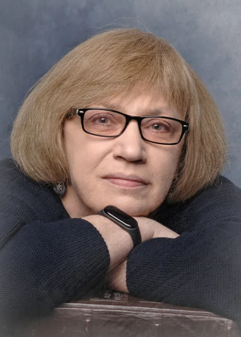
Наталья Пиунова
Театровед и редактор. В музее проводит обзорные экскурсии и городские маршруты.
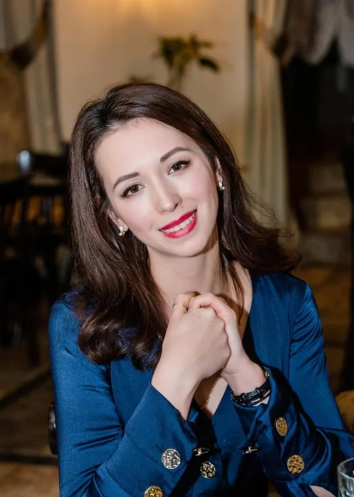
Марина Бессонова-Хворостовская
Экскурсовод и лектор. Участвует в подкастах радиостанции «Маяк».
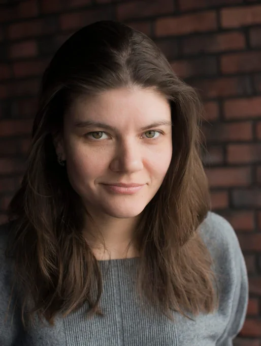
Наталия Егорова
Журналист и кандидат филологических наук. Проводит экскурсии с 2015 года.
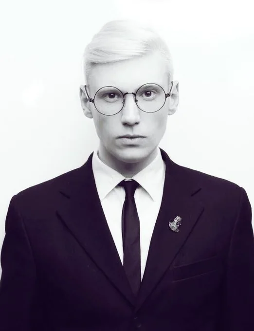
Филипп Хитров
Режиссёр театрализованных экскурсий и исполнитель роли Коровьева.
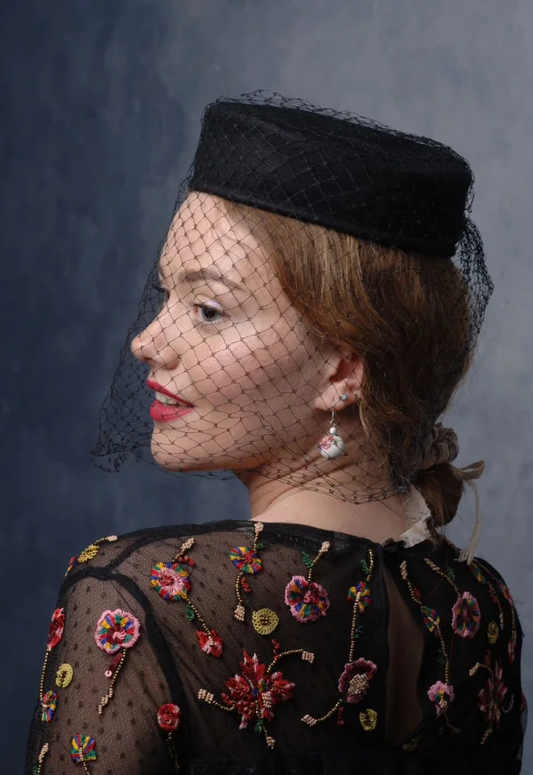
Екатерина Горпинко
Лектор и автор книги о маршрутах героев «Мастера и Маргариты». Водит группы по музею и Москве.